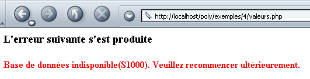
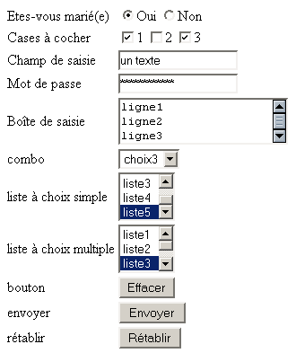
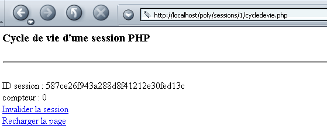
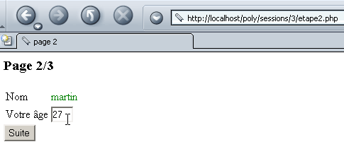
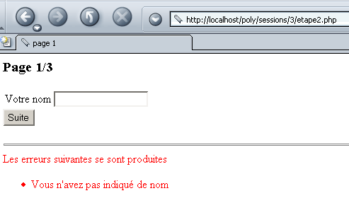

3. Introduction to Web Programming in PHP
3.1. PHP Programming
Let us recall here that PHP is a language in its own right and that while it is primarily used in the context of web application development, it can be used in other contexts. The document "PHP by Example" available at the URL http://shiva.istia.univ-angers.fr/~tahe/pub/php/php.pdf provides the basics of the language. We assume here that you have already mastered these basics. Let’s use a simple example to demonstrate how to run a PHP program on Windows. The following code has been saved as coucou.php.
This program is run in a Windows Command Prompt window:
dos>"e:\program files\easyphp\php\php.exe" coucou.php
X-Powered-By: PHP/4.3.0-dev
Content-type: text/html
hello
Note that the PHP interpreter sends the following by default:
- The PHP interpreter is php.exe and is normally located in the <php> directory of the software installation.
- the HTTP headers X-Powered-By and Content-type:
- the blank line separating the HTTP headers from the rest of the document
- the document consisting here of the text written by the echo function
3.2. The PHP interpreter configuration file
The behavior of the PHP interpreter is configured via a configuration file called php.ini, which is located, in Windows, within the Windows directory itself. It is a fairly large file; in Windows, for PHP version 4.2, it contains nearly 1,000 lines, three-quarters of which, fortunately, are comments. Let’s examine some of PHP’s configuration settings:
allows instructions to be included between <? > tags. If set to Off, they must be included between <?php ... > | |
When set to On, it allows the use of the <% =variable %> syntax used by ASP (Active Server Pages) | |
Enables the sending of the HTTP header X-Powered-By: PHP/4.3.0-dev. When set to Off, this header is removed. | |
Sets the scope of error reporting. Here, all errors (E_ALL) except runtime warnings (~E_NOTICE) will be reported | |
When set to on, places errors in the HTML output sent to the client. These are therefore displayed in the browser. It is recommended to set this option to off. | |
Errors will be logged to a file | |
stores the last error that occurred in the $php_errormsg variable | |
Sets the error log file (if log_errors=on) | |
When set to On, a number of variables become global. Considered a security hole. | |
generates the default HTTP header: Content-type: text/html | |
the list of directories that will be searched for files required by include or require directives | |
the directory where files storing the various active sessions will be saved. The disk in question is the one where PHP was installed. Here, /temp refers to e:\temp |
This configuration file affects the portability of the PHP program. Indeed, if a web application needs to retrieve the value of a C field from a web form, it can do so in various ways depending on whether the register_globals configuration variable is set to on or off:
- off: the value will be retrieved via $HTTP_GET_VARS["C"] or _GET["C"] or $HTTP_POST_VARS["C"] or $_POST["C"] depending on the method (GET/POST) used by the client to submit the form values
- on: same as above, plus $C, because the value of field C has been made global in a variable with the same name as the field
If a developer writes a program using the $C notation because the web/PHP server they are using has the register_globals variable set to on, that program will no longer work if it is moved to a web/PHP server where that same variable is set to off. We should therefore aim to write programs that avoid using features dependent on the web/PHP server configuration.
3.3. Configuring PHP at runtime
To improve the portability of a PHP program, you can set certain PHP configuration variables yourself. These are modified during the program’s execution and only for that program. Two functions are useful in this process:
returns the value of the configuration variable confVariable | |
sets the value of the configuration variable confVariable |
Here is an example where we set the value of the track_errors configuration variable:
<?php
// value of the track_errors configuration variable
echo "track_errors=".ini_get("track_errors")."\n";
// Change this value
ini_set("track_errors", "off");
// verification
echo "track_errors=".ini_get("track_errors")."\n";
?>
When executed, the following results are obtained:
E:\data\serge\web\php\poly\intro>"E:\Program Files\EasyPHP\php\php.exe" conf1.php
Content-type: text/html
track_errors=1
track_errors=off
The value of the track_errors configuration variable was initially 1 (~on). We set it to off. Note that if our application relies on certain configuration variable values, it is prudent to initialize them within the program itself.
3.4. Execution Context for the Examples
The examples in this handout will be run with the following configuration:
- PC running Windows 2000
- Apache 1.3 server
- PHP 4.3
The Apache server configuration is specified in the httpd.conf file. The following lines instruct Apache to load PHP as an integrated module and to pass any request for a document with certain file extensions—including .php—to the PHP interpreter. This is the default extension we will use for our PHP programs.
LoadModule php4_module "E:/Program Files/EasyPHP/php/php4apache.dll"
AddModule mod_php4.c
AddType application/x-httpd-php .phtml .pwml .php3 .php4 .php .php2 .inc
Additionally, we have defined a "poly" alias for Apache:
Alias "/poly/" "e:/data/serge/web/php/poly/"
<Directory "e:/data/serge/web/php/poly">
Options Indexes FollowSymLinks Includes
AllowOverride All
#Order allow,deny
Allow from all
</Directory>
Let’s call the path e:/data/serge/web/php/poly <poly>. If we want to request the document doc.php from the Apache server using a browser, we will use the URL http://localhost/poly/doc.php. The Apache server will recognize the alias poly in the URL and will then associate the URL /poly/doc.php with the document <poly>\doc.php.
3.5. A first example
Let’s write our first web/PHP application. The following text is saved in the file heure.php:
<html>
<head>
<title>A dynamic PHP page</title>
</head>
<body>
<center>
<h1>A dynamically generated PHP page</h1>
<h2>
<?php
$now = time();
echo date("d/m/y, h:i:s", $now);
?>
</h2>
<br>
Every time you refresh the page, the time changes.
</body>
</html>
If we request this page with a browser, we get the following result:

The dynamic part of the page was generated by PHP code:
What exactly happened? The browser requested the URL http://localhost/poly/intro/heure.php. The web server (Apache in this example) received this request and, because of the .php suffix of the requested document, determined that it should forward this request to the PHP interpreter. The interpreter then parses the heure.php document and executes all code segments located between the <?php > tags, replacing each one with the lines written by the PHP echo or print statements. Thus, the PHP interpreter will execute the code segment above and replace it with the line written by the echo statement:
Once all PHP code segments have been executed, the PHP document becomes a simple HTML document, which is then sent to the client.
We should avoid mixing PHP code and HTML code as much as possible. To that end, we could rewrite the previous application as follows:
<!-- PHP code -->
<?php
// get the current time
$now = time();
$now = date("d/m/y, h:i:s", $now);
?>
<!-- HTML code -->
<html>
<head>
<title>A dynamic PHP page</title>
</head>
<body>
<center>
<h1>A dynamically generated PHP page</h1>
<h2>
<?php echo $now ?>
</h2>
<br>
Every time you refresh the page, the time changes.
</body>
</html>
The result displayed in the browser is identical:

The second version is better than the first because there is less PHP code in the HTML. This makes the page structure clearer. We can take this a step further by putting the PHP code and the HTML code in two separate files. The PHP code is stored in the file heure3.php:
<!-- PHP code -->
<?php
// get the current time
$now = time();
$now = date("j/m/y, h:i:s", $now);
// display the result
include "time3-page1.php";
?>
The HTML code is stored in the file heure3-page1.php:
<!-- HTML code -->
<html>
<head>
<title>A dynamic PHP page</title>
</head>
<body>
<center>
<h1>A dynamically generated PHP page</h1>
<h2>
<?php echo $now ?>
</h2>
<br>
Every time you refresh the page, the time changes.
</body>
</html>
When the browser requests the document heure3.php, it will be loaded and parsed by the PHP interpreter. Upon encountering the line
the interpreter will include the file heure3-page1.php into the source code of heure3.php and execute it. Thus, it is as if we had the following PHP code:
<!-- PHP code -->
<?php
// get the current time
$now = time();
$now = date("j/m/y, h:i:s", $now);
?>
<!-- HTML code -->
<html>
<head>
<title>A dynamic PHP page</title>
</head>
<body>
<center>
<h1>A dynamically generated PHP page</h1>
<h2>
<?php echo $now ?>
</h2>
<br>
Every time you refresh the page, the time changes.
</body>
</html>
The result is the same as before:

The solution of placing PHP and HTML code in separate files will be adopted later. It offers several advantages:
- the structure of the pages sent to the client is not buried in PHP code. This allows them to be maintained by a "web designer" with graphic design skills but limited PHP expertise.
- The PHP code acts as a "front end" for client requests. Its purpose is to calculate the data needed for the page that will be returned to the client.
However, this solution has a drawback: instead of requiring the loading of a single document, it requires the loading of multiple documents, which can result in a loss of performance.
3.6. Retrieving parameters sent by a web client
3.6.1. via a POST
Consider the following form where the user must provide two pieces of information: a name and an age.

Once the user has filled in the Name and Age fields, they click the Submit button. The form values are then sent to the server. The server returns the form along with an array listing the values it received:

The browser requests the form from the following nomage.php application:
<?php
// Do we have the expected parameters?
$post=isset($_POST["txtName"]) && isset($_POST["txtAge"]);
if($post){
// retrieve the txtNom and txtAge parameters "posted" by the client
$name = $_POST["txtName"];
$age = $_POST["txtAge"];
} else {
$name="";
$age="";
}//if
// display the page
include "nameage-p1.php";
?>
Some explanations:
- An HTML form field called "field" can be sent to the server using the GET method or the POST method. If sent via the GET method, the server can retrieve it from the $_GET["field"] variable; if sent via the POST method, it can be retrieved from the $_POST["field"] variable.
- The existence of a piece of data can be tested using the isset(data) function, which returns true if the data exists, false otherwise.
- The nomage.php application creates three variables: $name for the form name, $age for the age, and $post to indicate whether values were "posted" or not. These three variables are passed to the nomage-p1.php page. Note that while this page participates in generating the response to the client, the client is unaware of this. From the client’s perspective, it is the nomage.php application that responds.
- The first time a client requests the application nomage.php, $post is set to false. This is because, during this first call, no form values are sent to the server.
The nomage-p1.php page is as follows:
<html>
<head>
<title>Web form</title>
</head>
<body>
<center>
<h3>A web form</h3>
<h4>Retrieving values from form fields</h4>
<hr>
<form name="frmPersonne" method="post">
<table>
<tr>
<td>Last Name</td>
<td><input type="text" value="<?php echo $nom ?>" name="txtNom" size="20"></td>
<td>Age</td>
<td><input type="text" value="<?php echo $age ?>" name="txtAge" size="3"></td>
<tr>
</table>
<input type="submit" name="cmdClear" value="Submit">
</form>
</center>
<hr>
<?php
// Were any values posted?
if ($post) {
?>
<h4>Retrieved values</h4>
<table border="1">
<tr>
<td>Name</td><td><?php echo $name ?></td>
<td width="10"></td>
<td>Age</td><td><?php echo $age ?></td>
<tr>
</table>
<?php } ?>
</body>
</html>
The nomage-p1.php application displays the frmPersonne form. It is defined by the tag:
Since the action attribute of the tag is not defined, the browser will send the form data to the URL it requested to retrieve it, i.e., the nomage.php application.
Let’s distinguish between the two cases of calling the nomage.php application:
- This is the first time the user is calling it. The nomage.php application therefore calls the nomage-p1.php application, passing it the values ($nom, $age, $post) = ("", "", false). The nomage-p1.php application then displays an empty form.
- The user fills out the form and clicks the Submit button. The form values (txtName, txtAge) are then "posted" (method="post" in <form>) to the nomage.php application (action attribute not defined in <form>). The nomage.php application calculates ($name, $age, $post) = (txtName, txtAge, true) and transmits them to the nomage-p1.php application, which then displays a pre-filled form along with the table of retrieved values.
3.6.2. via a GET
In the case where the form values are sent to the server via a GET request, the nomage.php application becomes the following nomage2.php application:
<?php
// Do we have the expected parameters?
$get = isset($_GET["txtName"]) && isset($_GET["txtAge"]);
if($get){
// retrieve the "GET" parameters txtNom and txtAge sent by the client
$name = $_GET["txtName"];
$age = $_GET["txtAge"];
} else {
$name="";
$age="";
}//if
// display the page
include "nomage-p2.php";
?>
The nomage-p2.php application is identical to the nomage-p1.php application, with the following minor differences:
- the form tag is modified:
- the application now retrieves a $get variable instead of $post:
At runtime, when values are entered into the form and sent to the server, the browser reflects in its URL field that the values were sent using the GET method:

3.7. Retrieving HTTP headers sent by a web client
When a browser makes a request to a web server, it sends a number of HTTP headers. It is sometimes useful to have access to these. We can start by using the $_SERVER associative array. This contains various pieces of information provided by the web server, including, among other things, the HTTP headers sent by the client. Consider the following program, which displays all the values of the $_SERVER array:
<?php
// displays variables related to the web server
// send plain text
header("Content-type: text/plain");
// iterate through the $_SERVER associative array
reset($_SERVER);
while (list($key, $value) = each($_SERVER)) {
echo "$key : $value\n";
}//while
?>
Let’s save this code in headers.php and request this URL using a browser:

We retrieve a number of pieces of information, including the HTTP headers sent by the browser. These are the values associated with keys starting with HTTP. Let's break down some of the information obtained above:
document types accepted by the web client | |
character sets accepted in documents | |
encoding types accepted for documents | |
language types accepted for documents | |
connection type with the server. Keep-Alive: the server must keep the connection open after sending its response | |
? maximum connection duration | |
host machine queried by the client | |
client identity | |
client's IP address | |
communication port used by the client | |
HTTP protocol used by the server | |
request method used by the client (GET or POST) | |
query ?param1=val1¶m2=val2&... appended to the requested URL (GET method) |
By slightly modifying the code from the previous program, we can retrieve only the HTTP headers:
<?php
// displays variables related to the web server
// Send plain text
header("Content-type: text/plain");
// iterate through the associative array $_SERVER
reset($_SERVER);
while (list($key, $value) = each($_SERVER)) {
// HTTP header?
if(strtolower(substr($key,0,4))=="http")
echo substr($key,5)." : $value\n";
}//while
?>
The result displayed in the browser is as follows:

If you want a specific HTTP header, you would write, for example, $_SERVER["HTTP_ACCEPT"].
3.8. Retrieving environment information
The web/PHP server runs in an environment that can be accessed via the $_ENV array, which stores various characteristics of the execution environment. Consider the following env1.php application:
<?php
// displays variables related to the web server
// send plain text
header("Content-type: text/plain");
// iterate through the $_ENV associative array
reset($_ENV);
while (list($key, $value) = each($_ENV)) {
echo "$key : $value\n";
}//while
?>
It produces the following result in a browser (partial view):

For example, as shown above, the web/PHP server is running on the Windows NT operating system.
3.9. Examples
3.9.1. Dynamic Form Generation - 1
Let’s take as an example the generation of a form with only one control: a combo box. The contents of this combo box are dynamically constructed using values taken from an array. In reality, these values are often retrieved from a database. The form is as follows:

If you click "Submit" on the example above, you get the following response:

The HTML code for the initial form, once it has been generated, is as follows:
<html>
<head>
<title>Form Generation</title>
</head>
<body>
<h2>Choose a number</h2>
<hr>
<form name="frmvalues" method="post" action="values.php">
<select name="cmbValues" size="1">
<option>one</option>
<option>two</option>
<option>three</option>
<option>four</option>
<option>five</option>
<option>six</option>
<option>seven</option>
<option>eight</option>
<option>nine</option>
<option>ten</option>
</select>
<input type="submit" value="Send" name="cmdSend">
</form>
</body>
</html>
The PHP application consists of a main page, valeurs.php, which is called both to retrieve the initial form (the list of values) and to process the values in it and return the response (the selected value). The application generates two different pages:
- the initial form page, which will be generated by the valeurs-p1.php program
- the page displaying the response provided to the user, which is generated by the valeurs-p2.php program
The valeurs.php application is as follows:
<?php
// the array of values
$values = array("one", "two", "three", "four", "five", "six", "seven", "eight", "nine", "ten");
// do we have the expected parameters
$emptyRequest = ! isset($_POST["cmbValues"]);
// retrieve the user's selection
if ($emptyRequest) {
// initial request
include "values-p1.php";
} else {
// response to a POST
$choice = $_POST["cmbValues"];
include "values-p2.php";
}
?>
It defines the values array and calls valeurs-p1.php to generate the initial form if the client's request was empty, or valeurs-p2.php to generate the response if a valid request was received. The valeurs-p1.php program is as follows:
<html>
<head>
<title>Form generation</title>
</head>
<body>
<h2>Choose a number</h2>
<hr>
<form name="frmvalues" method="post" action="values.php">
<select name="cmbValues" size="1">
<?php
for($i=0;$i<count($values);$i++){
echo "<option>$valeurs[$i]</option>\n";
}//for
?>
</select>
<input type="submit" value="Send" name="cmdSend">
</form>
</body>
</html>
The list of combo box values is dynamically generated from the $values array passed by valeurs.php. The valeurs-p2.php program generates the response:
<html>
<head>
<title>response</title>
</head>
<body>
<h2>You selected the number <?php echo $choice ?></h2>
</body>
</html>
Here, we simply display the value of the $choix variable, which is also passed from valeurs.php.
3.9.2. Dynamic Form Generation - 2
We’ll revisit the previous example and modify it as follows. The form remains the same:

But the response is different:

In the response, we return the form, with the number chosen by the user indicated below it. Furthermore, this number is the one that appears as selected in the list displayed by the response.
The code for valeurs.php is as follows:
<?php
// configuration
ini_set("register_globals","off");
// the values array
$values = array("one", "two", "three", "four", "five", "six", "seven", "eight", "nine", "ten");
// retrieve the user's selection, if any
$choice = $_POST["cmbValues"];
// display the response
include "values-p1.php";
?>
Note that here we have taken care to configure PHP so that there are no global variables. This is generally a good precaution, as global variables pose security risks. An alternative is to initialize all the variables we use. This will "overwrite" any global variable with the same name.
The form page is displayed by values-p1.php:
<html>
<head>
<title>Form Generation</title>
</head>
<body>
<h2>Choose a number</h2>
<hr>
<form name="frmvalues" method="post" action="values.php">
<select name="cmbValues" size="1">
<?php
for($i=0;$i<count($values);$i++){
// if the current option matches the selection, select it
if (isset($choice) && $choice == $values[$i])
echo "<option selected>$values[$i]</option>\n";
else echo "<option>$values[$i]</option>\n";
}//for
?>
</select>
<input type="submit" value="Send" name="cmdSend">
</form>
<?php
// continued on next page
if(isset($choice)){
echo "<hr>\n";
echo "<h3>You chose the number $choix</h3>\n";
}
?>
</body>
</html>
The page generator program relies on the $choix variable passed by the valeurs.php program. Note here that the page's HTML structure is starting to become seriously "cluttered" with PHP code. The front-end valeurs.php could do more of the work, as shown in the following new version:
<?php
// configuration
ini_set("register_globals","off");
// the values array
$values = array("one", "two", "three", "four", "five", "six", "seven", "eight", "nine", "ten");
// retrieve the user's selection, if any
$choice = $_POST["cmbValues"];
// calculate the list of values to display
$HTMLvalues = "";
for($i=0;$i<count($values);$i++){
// if the current option matches the selection, select it
if (isset($choice) && $choice == $values[$i])
$HTMLvalues.="<option selected>$values[$i]</option>\n";
else $HTMLvalues.="<option>$values[$i]</option>\n";
}//for
// calculate the second part of the page
$HTMLpart2="";
if(isset($choice)){
$HTMLpart2="<hr>\n";
$HTMLpart2.="<h3>You have chosen the number $choix</h3>\n";
}//if
// display the answer
include "values-p2.php";
?>
The page is now generated by the following valeurs-p2.php program:
<html>
<head>
<title>Form Generation</title>
</head>
<body>
<h2>Choose a number</h2>
<hr>
<form name="frmvalues" method="post" action="values.php">
<select name="cmbValues" size="1">
<?php
// display list of values
echo $HTMLvalues;
?>
</select>
<input type="submit" value="Submit" name="cmdSubmit">
</form>
<?php
// display part 2
echo $HTMLpart2;
?>
</body>
</html>
The HTML code is now free of much of the PHP code. However, let’s recall the purpose of splitting the system into a front-end program that analyzes and processes a client’s request and programs simply responsible for displaying pages configured with data transmitted by the front-end: it is to separate the work of the PHP developer from that of the web designer. The PHP developer works on the front end, while the web designer works on the web pages. In our new version, the web designer can no longer, for example, work on part 2 of the page since they no longer have access to its HTML code. In the first version, they could. Neither method is therefore perfect.
3.9.3. Dynamic Form Generation - 3
We’re revisiting the same problem as before, but this time the values are retrieved from a database. In our example, this is a MySQL database:
- the database is named dbValues
- its owner is admDbValeurs with the password mdpDbValeurs
- the database has a single table called tvaleurs
- this table has only one integer field called value
dos> mysql --database=dbValeurs --user=admDbValeurs --password=mdpDbValeurs
mysql> show tables;
+---------------------+
| Tables_in_dbValues |
+---------------------+
| tvaleurs |
+---------------------+
1 row in set (0.00 sec)
mysql> describe tvaleurs;
+--------+---------+------+-----+---------+-------+
| Field | Type | Null | Key | Default | Extra |
+--------+---------+------+-----+---------+-------+
| value | int(11) | | | 0 | |
+--------+---------+------+-----+---------+-------+
mysql> select * from tvaleurs;
+--------+
| value |
+--------+
| 0 |
| 1 |
| 2 |
| 3 |
| 4 |
| 6 |
| 5 |
| 7 |
| 8 |
| 9 |
+--------+
10 rows in set (0.00 sec)
In a database application, the following steps are generally involved:
- Connecting to the DBMS
- Sending SQL queries to a DBMS database
- Processing the results of these queries
- Closing the connection to the DBMS
Steps 2 and 3 are performed repeatedly, with the connection being closed only at the end of database operations. This is a relatively standard pattern for anyone who has worked with a database interactively. The following table provides the PHP instructions for performing these various operations with the MySQL DBMS:
$connection = mysql_pconnect($host, $user, $pwd) $connection = mysql_connect($host, $user, $pwd) $host: the hostname of the machine on which the MySQL DBMS is running. It is possible to work with remote MySQL DBMS instances. $user: the username recognized by the MySQL database $pwd: their password $connection: the connection created mysql_pconnect creates a persistent connection with the MySQL DBMS. Such a connection is not closed at the end of the script. It remains open. Thus, when a new connection to the DBMS needs to be opened, PHP will look for an existing connection belonging to the same user. If it finds one, it uses it. This saves time. mysql_connect creates a non-persistent connection, which is therefore closed when work with the MySQL DBMS is finished. | |
$results = mysql_db_query($db, $query, $connection) $db: the MySQL database you will be working with $query: an SQL query (insert, delete, update, select, ...) $connection: the connection to the MySQL DBMS $results: the results of the query—these differ depending on whether the query is a SELECT or an update operation (INSERT, UPDATE, DELETE, etc.) | |
$results = mysql_db_query($db, "SELECT ...", $connection) The result of a SELECT is a table, i.e., a set of rows and columns. This table is accessible via $results. $row = mysql_fetch_row($results) reads a row from the table and stores it in $row as an array. Thus, $row[i] is the i-th column of the retrieved row. The mysql_fetch_row function can be called repeatedly. Each time, it reads a new row from the $results table. When the end of the table is reached, the function returns false. Thus, the $results table can be used as follows: while($row = mysql_fetch_row($results)){ // process the current row $row }//while | |
$results = mysql_db_query($db, "insert ...", $connection) The $results value is true or false depending on whether the operation succeeded or failed. If successful, the mysql_affected_rows function returns the number of rows modified by the update operation. | |
mysql_close($connection) $connection: a connection to the MySQL DBMS |
The code in the front-end file valeurs.php becomes the following:
<?php
// configuration
ini_set("register_globals","off");
ini_set("display_errors", "off");
ini_set("track_errors", "on");
// the array of values
list($error, $values) = getValues();
// Was there an error?
if($error) {
// display error page
include "error-values.php";
// end
return;
}//if
// retrieve the user's selection, if any
$choice = $_POST["cmbValues"];
// calculate the list of values to display
$HTMLvalues="";
for($i=0;$i<count($values);$i++){
// if the current option matches the selection, select it
if (isset($choice) && $choice == $values[$i])
$HTMLvalues.="<option selected>$values[$i]</option>\n";
else $HTMLvalues.="<option>$values[$i]</option>\n";
}//for
// calculate the second part of the page
$HTMLpart2="";
if(isset($choice)){
$HTMLpart2="<hr>\n";
$HTMLpart2.="<h3>You have chosen the number $choix</h3>\n";
}//if
// display the response
include "values-p1.php";
// end
return;
// ------------------------------------------------------------------------
function getValues(){
// retrieves values from a MySQL database
$user="admDbValues";
$pwd="mdpDbValeurs";
$db="dbValues";
$host = "localhost";
$table="values_table";
$field="value";
// Open a persistent connection to the MySQL server
// or, alternatively, a normal connection
($connection = mysql_pconnect($host, $user, $pwd))
|| ($connection = mysql_connect($host, $user, $pwd));
if(! $connection)
return array("Database unavailable(".mysql_error()."). Please try again later.");
// retrieving values
$selectValues = mysql_db_query($db, "select $field from $table", $connection);
if(! $selectValues)
return array("Database unavailable (".mysql_error()."). Please try again later.");
// The values are placed in an array
$values = array();
while($row = mysql_fetch_row($selectValues)) {
$values[] = $row[0];
}//while
// Close the connection (if it is persistent, it will not actually be closed)
mysql_close($connection);
// return the result
return array("", $values);
}//getValues
?>
This time, the values to be placed in the dropdown menu are not provided by an array but by the getValues() function. This function:
- opens a persistent connection (mysql_pconnect) to the MySQL server by passing a registered username and password.
- Once the connection is established, a SELECT query is executed to retrieve the values from the tvaleurs table in the dbValeurs database.
- The result of the SELECT is placed in the $values array, which is returned to the calling program.
- The function actually returns an array with two elements ($error, $values), where the first element is an error message if one occurred, or an empty string otherwise.
- The calling program checks whether an error occurred and, if so, displays the `valeurs-err.php` page. This page is as follows:
<html>
<head>
<title>Error</title>
</head>
<body>
<h3>The following error occurred</h3>
<font color="red">
<h4><?php echo $error ?></h4>
</font>
</body>
</html>
- If there was no error, the calling program has the values in the $values array. We are therefore back to the previous problem.
Here are two examples of execution:
- with an error

- without error

3.9.4. Dynamic Form Generation - 4
In the previous example, what would happen if we switched DBMS? If we switched from MySQL to Oracle or SQL Server, for example? We would have to rewrite the getValues() function that provides the values. The advantage of having consolidated the code needed to retrieve the values to be displayed in the list into a single function is that the code requiring modification is clearly targeted and not scattered throughout the entire program. The getValues() function can be rewritten so that it is independent of the DBMS used. It simply needs to work with the DBMS’s ODBC driver rather than directly with the DBMS itself.
There are many databases on the market. To standardize database access under MS Windows, Microsoft developed an interface called ODBC (Open DataBase Connectivity). This layer hides the specific features of each database behind a standard interface. There are many ODBC drivers available under MS Windows that facilitate database access. Here, for example, is a list of ODBC drivers installed on a Windows machine:

The MySQL DBMS also has an ODBC driver. An application relying on ODBC drivers can use any of the databases listed above without rewriting.
 |
Let’s make our MySQL database dbValeurs accessible via an ODBC driver. The procedure below is for Windows 2000. For Win9x systems, the procedure is very similar. Activate the ODBC Resource Manager:

Use the [Add] button to add a new ODBC data source:

Select the MySQL ODBC driver, click [Finish], then specify the data source properties:

the name given to the ODBC data source (odbc-valeurs) | |
the name of the machine hosting the MySQL DBMS that manages the data source (localhost) | |
the name of the MySQL database that is the data source (dbValues) | |
a user with sufficient access rights to the MySQL database to be managed (admDbValeurs) | |
their password (mdpDbValeurs) |
PHP is capable of working with ODBC drivers. The following table lists the functions you need to know:
$connection = odbc_pconnect($dsn, $user, $pwd) $connection = odbc_connect($dsn, $user, $pwd) $dsn: DSN (Data Source Name) of the machine on which the DBMS is running $user: name of a user known to the DBMS $pwd: their password $connection: the connection created odbc_pconnect creates a persistent connection to the DBMS. Such a connection is not closed at the end of the script; it remains open. Thus, when a new connection to the DBMS needs to be established, PHP will look for an existing connection belonging to the same user. If it finds one, it uses it. This saves time. odbc_connect creates a non-persistent connection, which is therefore closed when work with the DBMS is finished. | |
$preparedQuery = odbc_prepare($connection, $query) $query: an SQL query (insert, delete, update, select, ...) $connection: the connection to the DBMS Parses the $query and prepares it for execution. The query thus "prepared" is referenced by the $preparedQuery result. Preparing a query for execution is not mandatory but improves performance since the query is parsed only once. We then request the execution of the prepared query. If we repeatedly request the execution of an unprepared query, it is parsed each time, which is unnecessary. Once prepared, the query is executed by $res=odbc_execute($preparedQuery) returns true or false depending on whether the query execution succeeds or fails | |
The result of a SELECT is a table, i.e., a set of rows and columns. This table is accessible via $preparedQuery. $res=odbc_fetch_row($preparedQuery) reads a row from the table resulting from the SELECT. Returns true or false depending on whether the query execution succeeds or fails. The elements of the retrieved row are available via the odbc_result function: $val=odbc_result($preparedQuery,i): column i of the row that has just been read $val=odbc_result($preparedQuery,"columnName"): column columnName of the row that has just been read The odbc_fetch_row function can be called repeatedly. Each time, it reads a new row from the result table. When the end of the table is reached, the function returns false. Thus, the result table can be processed as follows: | |
odbc_close($connection) $connection: a connection to the MySQL DBMS |
The getValues() function responsible for retrieving values from the ODBC database is as follows:
// ------------------------------------------------------------------------
function getValues(){
// retrieves values from a MySQL database
$user="admDbValeurs";
$pwd="mdpDbValeurs";
$db="dbValues";
$dsn = "odbc-values";
$table="tvaleurs";
$field="value";
// Open a persistent connection to the MySQL server
// or, otherwise, a normal connection
($connection = odbc_pconnect($dsn, $user, $pwd))
|| ($connection = odbc_connect($dsn, $user, $pwd));
if(! $connection)
return array("1 - Database unavailable(".odbc_error()."). Please try again later.");
// retrieving values
$selectValues = odbc_prepare($connection, "select $field from $table");
if(! odbc_execute($selectValues))
return array("2 - Database unavailable (".odbc_error()."). Please try again later.");
// The values are placed in an array
$values = array();
while(odbc_fetch_row($selectValues)){
$values[] = odbc_result($selectValues, $field);
}//while
// Close the connection (if it is persistent, it will not actually be closed)
odbc_close($connection);
// return the result
return array("", $values);
}//getValues
?>
If we run the new application without activating the odbc-values database, we get the following result:

Note that the error code returned by the ODBC driver (odbc_error()=S1000) is not very clear. If the odbc-values database is made available, we get the same results as before.
In conclusion, we can say that this solution is good for application maintenance. Indeed, if the database needs to change, the application itself will not need to change. The system administrator will simply create a new ODBC data source for the new database. Again, with maintenance in mind, it would be a good idea to place the database access parameters ($dsn, $user, $pwd) in a separate file that the application would load at startup (include).
3.9.5. Retrieving Values from a Form
We have already retrieved values from a form submitted by a web client on several occasions. The following example shows a form that includes the most common HTML components and is designed to retrieve the parameters sent by the client browser. The form is as follows:

It is pre-filled. The user can then modify it:

If they click the [Submit] button, the server returns the list of form values:

The form is a static HTML page named balises.html:
<html>
<head>
<title>tags</title>
<script language="JavaScript">
function clear(){
alert("You clicked the Clear button");
}//clear
</script>
</head>
<body background="/images/standard.jpg">
<form method="POST" action="parameters.php">
<table border="0">
<tr>
<td>Are you married?</td>
<td>
<input type="radio" value="yes" name="R1">Yes
<input type="radio" name="R1" value="no" checked>No
</td>
</tr>
<tr>
<td>Checkboxes</td>
<td>
<input type="checkbox" name="C1" value="one">1
<input type="checkbox" name="C2" value="two" checked>2
<input type="checkbox" name="C3" value="three">3
</td>
</tr>
<tr>
<td>Input field</td>
<td>
<input type="text" name="txtSaisie" size="20" value="a few words">
</td>
</tr>
<tr>
<td>Password</td>
<td>
<input type="password" name="txtMdp" size="20" value="aPassword">
</td>
</tr>
<tr>
<td>Input box</td>
<td>
<textarea rows="2" name="areaSaisie" cols="20">
line1
line2
line3
</textarea>
</td>
</tr>
<tr>
<td>combo</td>
<td>
<select size="1" name="cmbValues">
<option>choice1</option>
<option selected>choice2</option>
<option>option3</option>
</select>
</td>
</tr>
<tr>
<td>single-select list</td>
<td>
<select size="3" name="lst1">
<option selected>list1</option>
<option>list2</option>
<option>list3</option>
<option>list4</option>
<option>list5</option>
</select>
</td>
</tr>
<tr>
<td>multiple-choice list</td>
<td>
<select size="3" name="lst2[]" multiple>
<option selected>list1</option>
<option>list2</option>
<option selected>list3</option>
<option>list4</option>
<option>list5</option>
</select>
</td>
</tr>
<tr>
<td>button</td>
<td>
<input type="button" value="Clear" name="cmdClear" onclick="clear()">
</td>
</tr>
<tr>
<td>send</td>
<td>
<input type="submit" value="Send" name="cmdSend">
</td>
</tr>
<tr>
<td>Reset</td>
<td>
<input type="reset" value="Reset" name="cmdReset">
</td>
</tr>
</table>
<input type="hidden" name="secret" value="aValue">
</form>
</body>
</html>
The table below summarizes the role of the various tags in this document and the value retrieved by PHP for the different types of form components. The value of an HTML field named C can be sent via a POST or a GET request. In the first case, it will be retrieved in the $_GET["C"] variable, and in the second case in the $_POST["C"] variable. The following table assumes the use of a POST request.
HTML | HTML tag | Value retrieved by PHP |
<form method="POST" > | ||
<input type="text" name="txtSaisie" size="20" value="some words"> | $_POST["txtSaisie"]: value contained in the txtSaisie field of the form | |
<input type="password" name="txtPassword" size="20" value="aPassword"> | $_POST["txtmdp"]: value contained in the txtMdp field of the form | |
<textarea rows="2" name="areaSaisie" cols="20"> line1 line2 line3 </textarea> | $_POST["areaSaisie"]: lines contained in the areaSaisie field as a single string: "line1\r\nline2\r\nline3". The lines are separated by the "\r\n" sequence. | |
<input type="radio" value="Yes" name="R1">Yes <input type="radio" name="R1" value="no" checked>No | $_POST["R1"]: value (=value) of the radio button checked as "yes" or "no" as appropriate. | |
<input type="checkbox" name="C1" value="one">1 <input type="checkbox" name="C2" value="two" checked>2 <input type="checkbox" name="C3" value="three">3 | $_POST["C1"]: value of the checkbox if it is checked; otherwise, the variable does not exist. Thus, if checkbox C1 has been checked, $_POST["C1"] is "one"; otherwise, $_POST["C1"] does not exist. | |
<select size="1" name="cmbValeurs"> <option>choice1</option> <option selected>choice2</option> <option>option3</option> </select> | $_POST["cmbValeurs"]: option selected from the list, for example "choice3". | |
<select size="3" name="lst1"> <option selected>list1</option> <option>list2</option> <option>list3</option> <option>list4</option> <option>list5</option> </select> | $_POST["lst1"]: option selected from the list, for example "list5". | |
<select size="3" name="lst2[]" multiple> <option>list1</option> <option>list2</option> <option selected>list3</option> <option>list4</option> <option>list5</option> </select> | $_POST["lst2"]: array of options selected from the list, for example ["list3,"list5"]. Note the specific syntax of the HTML tag for this particular case: lst2[]. | |
<input type="hidden" name="secret" value="aValue"> | $_POST["secret"]: value of the field, here "aValue". |
In our example, the form values are sent to the parameters.php program:
The code for the latter is as follows:
<?php
// configuration
ini_set("register_globals","off");
ini_set("display_errors", "off");
// request method
$method = $_SERVER["REQUEST_METHOD"];
// retrieving parameters
// this depends on how the parameters were sent
if($method == "GET")
$param = $_GET;
else $param = $_POST;
$R1 = $param["R1"];
$C1 = $param["C1"];
$C2 = $param["C2"];
$C3 = $param["C3"];
$txtInput=$param["txtInput"];
$txtPassword=$param["txtPassword"];
$areaInput = implode("<br>", explode("\r\n", $param["areaInput"));
$cmbValues = $param["cmbValues"];
$lst1 = $param["lst1"];
$lst2 = implode("<br>", $param["lst2"]);
$secret = $param["secret"];
// Is the request valid?
$validRequest = isset($R1) && (isset($C1) || isset($C2) || isset($C3))
&& isset($txtInput) && isset($txtPassword) && isset($inputArea)
&& isset($cmbValues) && isset($lst1) && isset($lst2)
&& isset($secret);
// display page
if ($validRequest)
include "parameters-p1.php";
else include "tags.html";
?>
Let's break down a few points of this program:
- The application does not depend on how form values are passed to the server. In both possible cases (GET and POST), the dictionary of passed values is referenced by $param.
- Using the contents of the "areaSaisie" field ("line1\r\nline2\r\n..."), we create an array of strings using explode("\r\n", $param["areaSaisie"]). We now have the array [line1, line2, ...]. From this, we create the string "line1<br>line2<br>..." using the implode function.
- The value of the multi-select list lst2 is an array, for example ["option3","option5"]. From this, we create a string "option3<br>option5" using the implode function.
- The application checks that all parameters have been set. It is important to remember here that any URL can be called manually or programmatically, and that the expected parameters may not necessarily be present. If parameters are missing, the balises.html page is displayed; otherwise, the parameters-p1.php page is displayed. This page displays the values retrieved and calculated in parameters.php in an array:
<html>
<head>
<title>Retrieving form parameters</title>
</head>
<body>
<table border="1">
<tr>
<td>R1</td>
<td><?php echo $R1 ?></td>
</tr>
<tr>
<td>C1</td>
<td><?php echo $C1 ?></td>
</tr>
<tr>
<td>C2</td>
<td><?php echo $C2 ?></td>
</tr>
<tr>
<td>C3</td>
<td><?php echo $C3 ?></td>
</tr>
<tr>
<td>txtInput</td>
<td><?php echo $txtInput ?></td>
</tr>
<tr>
<td>txtPassword</td>
<td><?php echo $txtPassword ?></td>
</tr>
<tr>
<td>inputField</td>
<td><?php echo $areaSaisie ?></td>
</tr>
<tr>
<td>cmbValues</td>
<td><?php echo $cmbValues ?></td>
</tr>
<tr>
<td>lst1</td>
<td><?php echo $lst1 ?></td>
</tr>
<tr>
<td>lst2</td>
<td><?php echo $lst2 ?></td>
</tr>
<tr>
<td>secret</td>
<td><?php echo $secret ?></td>
</tr>
</table>
</body>
</html>
3.10. Session tracking
3.10.1. The Problem
A web application may consist of several form exchanges between the server and the client. The process works as follows:
Step 1
- Client C1 establishes a connection with the server and makes its initial request.
- The server sends form F1 to client C1 and closes the connection opened in step 1.
Step 2
- Client C1 fills out the form and sends it back to the server. To do this, the browser opens a new connection with the server.
- The server processes the data from form 1, calculates information I1 from it, sends form F2 to client C1, and closes the connection opened in step 3.
Step 3
- The cycle of steps 3 and 4 repeats in steps 5 and 6. At the end of step 6, the server will have received two forms, F1 and F2, and will have calculated information I1 and I2 from them.
The problem at hand is: how does the server keep track of information I1 and I2 associated with client C1? This problem is called tracking the session of client C1. To understand its root cause, let’s examine the diagram of a TCP-IP server application serving multiple clients simultaneously:
 |
In a classic TCP-IP client-server application:
- the client establishes a connection with the server
- exchanges data with the server through this connection
- the connection is closed by one of the two parties
The two key points of this mechanism are:
- a single connection is created for each client
- this connection is used for the entire duration of the server’s dialogue with its client
What allows the server to know at any given moment which client it is working with is the connection—or, in other words, the "channel"—that links it to its client. Since this channel is dedicated to a specific client, everything that comes through this channel originates from that client, and everything sent through this channel reaches that same client.
The HTTP client-server mechanism follows the previous model, with the exception that the client-server dialogue is limited to a single exchange between the client and the server:
- the client opens a connection to the server and makes its request
- the server sends its response and closes the connection
If at time T1, a client C makes a request to the server, it obtains a connection C1 that will be used for the single request-response exchange. If, at time T2, this same client makes a second request to the server, it will obtain a connection C2 that is different from connection C1. For the server, there is then no difference between this second request from user C and their initial request: in both cases, the server treats the client as a new client. For there to be a link between client C’s different connections to the server, client C must be “recognized” by the server as a “regular” and the server must retrieve the information it has on this regular.
Let’s imagine a government agency that operates as follows:
- There is a single queue
- There are several service counters. Therefore, several customers can be served simultaneously. When a counter becomes available, a customer leaves the queue to be served at that counter
- If this is the customer’s first visit, the person at the counter gives them a ticket with a number. The customer may ask only one question. Once they receive their answer, they must leave the counter and go to the back of the line. The counter clerk records the customer’s information in a file bearing their number.
- When it is their turn again, the customer may be served by a different teller than the previous time. The teller asks for their token and retrieves the file with the token number. Once again, the customer makes a request, receives an answer, and information is added to their file.
- and so on... Over time, the customer will receive answers to all their requests. The connection between the different requests is maintained through the token and the file associated with it.
The session tracking mechanism in a client-server web application works similarly to the previous example:
- Upon making their first request, a client is issued a token by the web server
- they will present this token with each subsequent request to identify themselves
The token can take various forms:
- a hidden field in a form
- the client makes its first request (the server recognizes it because the client has no token)
- The server sends its response (a form) and places the token in a hidden field within it. At this point, the connection is closed (the client leaves the session with its token). The server may have associated information with this token.
- The client makes a second request by resubmitting the form. The server retrieves the token from the form. It can then process the client’s second request by accessing, via the token, the information calculated during the first request. New information is added to the file associated with the token, a second response is sent to the client, and the connection is closed for the second time. The token has been placed back into the response form so that the user can present it during their next request.
- and so on...
The main drawback of this technique is that the token must be placed in a form. If the server’s response is not a form, the hidden field method can no longer be used.
- The cookie method
- The client makes its first request (the server recognizes this because the client has no token)
- The server responds by adding a cookie to the HTTP headers. This is done using the HTTP Set-Cookie command:
Set-Cookie: param1=value1;param2=value2;....
where param1, param2, etc., are parameter names and their respective values. Among the parameters will be the token. Very often, only the token is included in the cookie, with the server storing the other information in the folder associated with the token. The browser that receives the cookie will store it in a file on the disk. After the server’s response, the connection is closed (the client leaves the session with its token).
- (continued)
- The client makes its second request to the server. Each time a request is made to a server, the browser checks among all the cookies it has to see if it has one from the requested server. If so, it sends it to the server, always in the form of an HTTP command—the Cookie command, which has a syntax similar to that of the Set-Cookie command used by the server:
Cookie: param1=value1;param2=value2;....
Among the HTTP headers sent by the browser, the server will find the token that allows it to recognize the client and retrieve the information associated with it.
This is the most commonly used form of token. It has one drawback: a user can configure their browser to reject cookies. Such users then cannot access web applications that use cookies.
- URL rewriting
- The client makes its first request (the server recognizes this because the client has no token)
- The server sends its response. This response contains links that the user must use to continue using the application. In the URL of each of these links, the server adds the token in the form URL;token=value.
- When the user clicks on one of the links to continue using the application, the browser sends a request to the web server, including the requested URL (URL;token=value) in the HTTP headers. The server is then able to retrieve the token.
3.10.2. The PHP API for session tracking
We will now present the main methods useful for session tracking:
starts the session to which the current request belongs. If the request was not yet part of a session, one is created. | |
identifier of the current session | |
dictionary storing session data. Read-write accessible | |
deletes the data contained in the current session. This data remains available for the current client-server exchange but will be unavailable during the next exchange. |
3.10.3. Example 1
We present an example inspired by the book "Programming with J2EE" published by Wrox and distributed by Eyrolles. This example demonstrates how a PHP session works. The main page is as follows:

It contains the following elements:
- the session ID obtained by the session_id() function. This ID, generated by the browser, is sent to the client via a cookie that the browser sends back when it requests a URL from the same directory tree. This is what maintains the session.
- A counter that is incremented with each browser request and indicates that the session is being maintained.
- A link to delete the data associated with the current session. This is done by the session_destroy() function
- A link to reload the page
The code for the cycledevie.php application is as follows:
<?php
//cycledevie.php
// configuration
ini_set("register_globals", "off");
ini_set("display_errors", "off");
// Start a session
session_start();
// Should we invalidate it?
$action = $_GET["action"];
if($action=="invalidate"){
// end session
session_destroy();
}//if
// counter management
if(!isset($_SESSION["counter"]))
// the counter does not exist - create it
$_SESSION["counter"] = 0;
// the counter exists - increment it
else $_SESSION["counter"]++;
// retrieve the ID of the current session
$sessionId = session_id();
// retrieve the counter
$counter = $_SESSION["counter"];
// pass control to the display page
include "cycledevie-p1.php";
?>
Note the following points:
- As soon as the application starts, a session is initiated. If the client has sent a session token, the session with that identifier is resumed, and all associated data is placed in the $_SESSION dictionary. Otherwise, a new session token is created.
- If the client has sent an action parameter with the value "invalidate", the session data is marked as "to be deleted" for the next exchange. It will not be saved on the server at the end of the exchange, unlike in a normal exchange.
- We retrieve a session-related counter from the $_SESSION dictionary, as well as the session ID (session_id()).
- The page to be sent to the client is generated by the cycledevie-p1.php program
The cycledevie-p1.php page displays the page sent to the client:
<html>
<head>
<title>Session Management</title>
</head>
<body>
<h3>PHP Session Lifecycle</h3>
<hr>
<br>Session ID: <?php echo $idSession ?>
<br>Counter: <?php echo $counter ?>
<br><a href="cycledevie.php?action=invalider">Invalidate session</a>
<br><a href="cycledevie.php">Reload page</a>
</body>
</html>
Note the URL attached to each of the two links:
- cycledevie.php to reload the page
- cycledevie.php?action=invalider to invalidate the session. In this case, a parameter action=invalider is appended to the URL. It will be retrieved by the cycledevie.php server program using the statement $action=$_GET["action"].
Let’s reload the page twice in a row:

The counter has indeed been incremented. The session ID has not changed. Now let’s invalidate the session:

We see that we have lost the session ID, but the counter has been incremented again. Let’s reload the page:

We see that we start again with the same session ID as before. The counter, however, resets to zero. The session_destroy() function therefore does not have an immediate effect. The data from the current session is deleted only for the client-server exchange that follows the one in which the deletion occurs. The session ID has not changed, which suggests that session_destroy() does not start a new session by creating a new ID. The session token cookie was sent back by the client browser, and PHP retrieved the session from that token—a session that no longer contained any data.
The previous tests were performed with the Netscape browser configured to use cookies. Let's now configure it to disable cookies. This means it will neither store nor send back the cookies sent by the server. We would then expect sessions to no longer work. Let's try this with an initial exchange:

We have a session ID, the one generated by session_start(). Let’s reload the page using the link:

Surprisingly, the results above show that we have an active session and that the counter is being managed correctly. How is this possible, since cookies have been disabled and there is no longer any token exchange between the server and the browser? The URL in the screenshot above gives us the answer:
This is the URL for the "Reload page" link. Let's check the source code of the page displayed by the browser:
<a href="cycledevie.php?action=invalider&PHPSESSID=587ce26f943a288d8f41212e30fed13c">Invalidate session</a>
<a href="cycledevie.php?PHPSESSID=587ce26f943a288d8f41212e30fed13c">Reload page</a>
Note that the original code for the two links on the cycledevie-p1.php page is as follows:
The PHP interpreter has therefore automatically rewritten the URLs of the two links by adding the session token. This ensures that the token is properly transmitted by the browser when the links are clicked. This explains why, even without cookies enabled, the session is still managed correctly.
3.10.4. Example 3
We propose to write a PHP application that would act as a client for the previous counter application. It would call it N times in a row, where N is passed as a parameter. Our goal is to demonstrate a programmed web client and how to manage the session token. Our starting point will be a generic web client called as follows:
webclient URL GET/HEAD
- URL: requested URL
- GET/HEAD: GET to request the page’s HTML code, HEAD to limit the response to HTTP headers only
Here is an example using the URL http://localhost/poly/sessions/2/cycledevie.php. This program is the one already described, with one slight difference:
// set the cookie path
session_set_cookie_params(0,"/poly/sessions/2");
// start a session
session_start();
The session_set_cookie_params function allows you to set certain parameters for the cookie that will contain the session token. The first parameter is the cookie’s lifetime. A lifetime of zero means the cookie is deleted by the browser that received it when the browser is closed. The second parameter is the path of the URLs to which the browser must send the cookie. In the example above, if the browser received the cookie from the localhost machine, it will send the cookie to any URL located in the http://localhost/poly/sessions/2/ directory tree.
dos>e:\php43\php.exe clientweb.php http://localhost/poly/sessions/2/cycledevie.php GET
HTTP/1.1 200 OK
Date: Wed, 09 Oct 2002 13:58:16 GMT
Server: Apache/1.3.24 (Win32)
Set-Cookie: PHPSESSID=48d5aaa0e99850b17c33a6e22d38e5c4; path=/poly/sessions/2
Expires: Thu, 19 Nov 1981 08:52:00 GMT
Cache-Control: no-store, no-cache, must-revalidate, post-check=0, pre-check=0
Pragma: no-cache
Transfer-Encoding: chunked
Content-Type: text/html
<html>
<head>
<title>Session Management</title>
</head>
<body>
<h3>PHP Session Lifecycle</h3>
<hr>
<br>Session ID: 48d5aaa0e99850b17c33a6e22d38e5c4 <br>Counter: 0
<br><a href="cycledevie.php?action=invalider&PHPSESSID=48d5aaa0e99850b17c33a6e22d38e5c4">Invalid
Session expired</a>
<br><a href="cycledevie.php?PHPSESSID=48d5aaa0e99850b17c33a6e22d38e5c4">Reload page</a>
</body>
</html>
The clientweb program displays everything it receives from the server. Above, we see the HTTP Set-cookie command, which the server uses to send a cookie to its client. Here, the cookie contains two pieces of information:
- PHPSESSID, which is the session token
- path, which defines the URL to which the cookie belongs. path=/poly/sessions/2 tells the browser that it must send the cookie back to the server every time it requests a URL starting with /poly/sessions/2 from the machine that sent it the cookie.
- A cookie can also specify an expiration time. Here, this information is missing. The cookie will therefore be deleted when the browser is closed. A cookie can have an expiration time of N days, for example. As long as it is valid, the browser will send it back every time one of the URLs in its domain (Path) is accessed. Consider an online CD store. It can track a customer’s browsing path through its catalog and gradually determine their preferences—classical music, for example. These preferences can be stored in a cookie with a lifespan of 3 months. If that same customer returns to the site after a month, the browser will send the cookie back to the server application. Based on the information contained in the cookie, the server application can then tailor the generated pages to the customer’s preferences.
The web client code follows.
<?php
// configuration
dl("php_curl.dll"); // CURL library
// syntax: $0 GET URL
// requires three arguments
if($argc != 3){
// error message
fputs(STDERR, "Syntax: $argv[0] URL GET/HEAD");
// exit
exit(1);
}//if
// the third argument must be GET or HEAD
$header = strtolower($argv[2]);
if($header!="get" && $header!="head"){
// error message
fputs(STDERR, "Syntax: $argv[0] URL GET/HEAD");
// exit
exit(2);
}//if
// the first argument is a URL
$URL = strtolower($argv[1]);
// preparing the connection
$connection = curl_init($URL);
// configuring the connection
curl_setopt($connection, CURLOPT_HEADER, 1);
if($header=="head") curl_setopt($connection,CURLOPT_NOBODY,1);
// Execute the connection
curl_exec($connection);
// Close the connection
curl_close($connection);
// end
exit(0);
?>
The previous program uses the CURL library:
initializes a CURL object with the URL to be accessed | |
sets the value of certain connection options. Here are the two used in the program: CURLOPT_HEADER=1: retrieves the HTTP headers sent by the server CURLOPT_NOBODY=1: allows you to ignore the document sent by the server behind the HTTP headers | |
establishes a connection to $URL with the specified options. Displays everything the server sends on the screen | |
closes the connection |
The previous program is fairly simple. However, the CURL library does not allow for fine-grained manipulation of the server’s response, such as parsing it line by line. The following program does the same thing as the previous one but using PHP’s basic network functions. It will serve as the starting point for writing a client for our cycledevie.php application.
<?php
// syntax: $0 URL GET/HEAD
// requires three arguments
if($argc != 3){
// error message
fputs(STDERR, "Syntax: $argv[0] URL GET/HEAD");
// exit
exit(1);
}//if
// connect and display the result
$results = getURL($argv[1], $argv[2]);
if(isset($results->error)){
// error
echo "The following error occurred: $results->error\n";
}else{
// display server response
echo $results->response;
}//if
// end
exit(0);
//-----------------------------------------------------------------------
function getURL($URL, $header) {
// connects to $URL
// performs a GET or HEAD request depending on the value of header
// the server's response forms the function's result
// parses the URL
$url = parse_url($URL);
// the protocol
if(strtolower($url["scheme"])!="http"){
$results->error = "The URL [$URL] is not in the format http://machine[:port][/path]";
return $results;
}//if
// the machine
$host = $url["host"];
if(!isset($host)){
$results->error="The URL [$URL] is not in the format http://machine[:port][/path]";
return $results;
}//if
// the port
$port = $url["port"];
if(!isset($port)) $port=80;
// the path
$path = $url["path"];
// the query
if(isset($url["query"])){
$results->error = "The URL [$URL] is not in the format http://machine[:port][/path]";
return $results;
}//if
// parse $header
$header = strtoupper($header);
if($header!="GET" && $header!="HEAD"){
// error message
$results->error = "Method [$header] must be GET or HEAD";
// stop
return $results;
}//if
// Open a connection on port $port of $host
$connection = fsockopen($host, $port, &$errno, &$error);
// return if error
if(! $connection){
$results->error = "Failed to connect to the site ($host, $port): $error";
return $results;
}//if
// $connection represents a bidirectional communication channel
// between the client (this program) and the contacted web server
// This channel is used for exchanging commands and information
// The communication protocol is HTTP
// The client sends a GET request to request the URL /
// GET URL syntax: HTTP/1.0
// HTTP headers must end with a blank line
fputs($connection, "$header $path HTTP/1.0\n\n");
// The server will now respond on the $connection channel. It will send all
// this data and then close the channel. The client therefore reads everything coming from $connection
// until the channel is closed
$results->response="";
while($line = fgets($connection, 10000))
$results->response.=$line;
// the client closes the connection in turn
fclose($connection);
// return
return $results;
}//getURL
?>
Let's comment on a few points of this program:
- The program accepts two parameters:
- an HTTP URL whose content you want to display on the screen.
- a GET or HEAD method to use, depending on whether you want only the HTTP headers (HEAD) or also the body of the document associated with the URL (GET).
- Both parameters are passed to the getURL function. This function returns an object $results. This object has an error field if there is an error, and a response field otherwise. The error field is used to store any error messages. The response field contains the response from the contacted web server.
- The getURL function parses the URL $URL using the parse_url function. The statement $url=parse_url($URL) creates the associative array $url with the following possible keys:
- scheme: the URL protocol (http, ftp, etc.)
- host: the host of the URL
- port: the URL’s port
- path: the path of the URL
- querystring: the URL’s parameters
A URL is valid if it is in the form http://machine[:port][/path].
- The $header parameter is also checked
- Once the parameters have been verified and are correct, a TCP connection is established to the machine ($host, $port), and then the HTTP GET or HEAD request is sent depending on the $header parameter.
- We then read the server's response and store it in $results->response.
Running the program yields the following results:
dos>"e:\php43\php.exe" geturl.php http://localhost/poly/sessions/2/cycledevie.php get
HTTP/1.1 200 OK
Date: Wed, 09 Oct 2002 14:56:55 GMT
Server: Apache/1.3.24 (Win32)
Set-Cookie: PHPSESSID=ea0d2673811ed069e7289d86933a4c0a; path=/poly/sessions/2
Expires: Thu, 19 Nov 1981 08:52:00 GMT
Cache-Control: no-store, no-cache, must-revalidate, post-check=0, pre-check=0
Pragma: no-cache
Connection: close
Content-Type: text/html
<html>
<head>
<title>Session Management</title>
</head>
<body>
<h3>PHP Session Lifecycle</h3>
<hr>
<br>Session ID: ea0d2673811ed069e7289d86933a4c0a <br>Counter: 0
<br><a href="cycledevie.php?action=invalider&PHPSESSID=ea0d2673811ed069e7289d86933a4c0a">Invalid
Session expired</a>
<br><a href="cycledevie.php?PHPSESSID=ea0d2673811ed069e7289d86933a4c0a">Reload page</a>
</body>
</html>
The attentive reader will have noticed that the server's response differs depending on the client program used. In the first case, the server sent an HTTP header: Transfer-Encoding: chunked, a header that was not sent in the second case. This is because the second client sent the HTTP header: GET HTTP/1.0, which requests a URL and indicates that it is using HTTP version 1.0, forcing the server to respond using the same protocol. However, the HTTP header Transfer-Encoding: chunked belongs to HTTP version 1.1. Therefore, the server did not use it in its response. This shows us that the first client made its request indicating that it was using HTTP version 1.1.
We will now create the clientCompteur program, which is called as follows:
clientCompteur URL N [JSESSIONID]
- URL: URL of the cycledevie application
- N: number of calls to make to this application
- PHPSESSID: optional parameter—session token
The purpose of the program is to call the cycledevie.php application N times, managing the session cookie and displaying the counter value returned by the server each time. At the end of the N calls, the counter value should be N-1. Here is a first example of execution:
dos>"e:\php43\php.exe" clientCompteur2.php http://localhost/poly/sessions/2/cycledevie.php 3
--> GET /poly/sessions/2/cycledevie.php HTTP/1.1
--> Host: localhost:80
--> Connection: close
-->
<-- HTTP/1.1 200 OK
<-- Date: Thu, 10 Oct 2002 06:27:48 GMT
<-- Server: Apache/1.3.24 (Win32)
<-- Set-Cookie: PHPSESSID=2425e00d1d65c2bdcbafc1ce6244f7ea; path=/poly/sessions/2
<-- Expires: Thu, 19 Nov 1981 08:52:00 GMT
<-- Cache-Control: no-store, no-cache, must-revalidate, post-check=0, pre-check=0
<-- Pragma: no-cache
<-- Connection: close
<-- Transfer-Encoding: chunked
<-- Content-Type: text/html
<--
[The counter is equal to 0]
--> GET /poly/sessions/2/cycledevie.php HTTP/1.1
--> Host: localhost:80
--> Connection: close
--> Cookie: PHPSESSID=2425e00d1d65c2bdcbafc1ce6244f7ea
-->
<-- HTTP/1.1 200 OK
<-- Date: Thu, 10 Oct 2002 06:27:48 GMT
<-- Server: Apache/1.3.24 (Win32)
<-- Expires: Thu, 19 Nov 1981 08:52:00 GMT
<-- Cache-Control: no-store, no-cache, must-revalidate, post-check=0, pre-check=0
<-- Pragma: no-cache
<-- Connection: close
<-- Transfer-Encoding: chunked
<-- Content-Type: text/html
<--
[The counter is equal to 1]
--> GET /poly/sessions/2/cycledevie.php HTTP/1.1
--> Host: localhost:80
--> Connection: close
--> Cookie: PHPSESSID=2425e00d1d65c2bdcbafc1ce6244f7ea
-->
<-- HTTP/1.1 200 OK
<-- Date: Thu, Oct 10, 2002 06:27:48 GMT
<-- Server: Apache/1.3.24 (Win32)
<-- Expires: Thu, 19 Nov 1981 08:52:00 GMT
<-- Cache-Control: no-store, no-cache, must-revalidate, post-check=0, pre-check=0
<-- Pragma: no-cache
<-- Connection: close
<-- Transfer-Encoding: chunked
<-- Content-Type: text/html
<--
[The counter is equal to 2]
The program displays:
- the HTTP headers it sends to the server in the form --> headerSent
- the HTTP headers it receives in the form <-- headerReceived
- the counter value after each call
We can see that during the first call:
- the client does not send a cookie
- the server sends one (Set-Cookie:)
For subsequent requests:
- the client systematically sends back the cookie it received from the server during the first request. This is what allows the server to recognize it and increment its counter.
- the server, for its part, no longer sends a cookie
We rerun the previous program by passing the token above as the third parameter:
dos>"e:\php43\php.exe" clientCompteur2.php http://localhost/poly/sessions/2/cycledevie.php 1 2425e00d1d65c2bdcbafc1ce6244f7ea
--> GET /poly/sessions/2/cycledevie.php HTTP/1.1
--> Host: localhost:80
--> Connection: close
--> Cookie: PHPSESSID=2425e00d1d65c2bdcbafc1ce6244f7ea
-->
<-- HTTP/1.1 200 OK
<-- Date: Thu, 10 Oct 2002 06:32:03 GMT
<-- Server: Apache/1.3.24 (Win32)
<-- Expires: Thu, 19 Nov 1981 08:52:00 GMT
<-- Cache-Control: no-store, no-cache, must-revalidate, post-check=0, pre-check=0
<-- Pragma: no-cache
<-- Connection: close
<-- Transfer-Encoding: chunked
<-- Content-Type: text/html
<--
[The counter is equal to 3]
Here we see that as soon as the client makes its first request, the server receives a valid session cookie. This may indicate a potential security vulnerability. If I am able to intercept a session token on the network, I can then impersonate the user who initiated the session. In our example, the first request (without a session token) represents the user who initiates the session (perhaps with a username and password that grant them the right to receive a token), and the second request (with a session token) represents the user who has "hacked" the session token from the first request. If the current operation is a banking transaction, this could become problematic...
The client code is as follows:
<?php
// syntax: $0 URL N [PHPSESSID]
// three arguments are required
if($argc!=3 && $argc!=4){
// error message
fputs(STDERR, "Syntax: $argv[0] URL N [PHPSESSID]");
// exit
exit(1);
}//if
// retrieve parameters
$URL = $argv[1];
$N=$argv[2];
$PHPSESSID = $argv[3];
// connect and display the result
$results = getURL($URL, $N, $PHPSESSID);
if(isset($results->error)){
// error
echo "The following error occurred: $results->error\n";
}
// end
exit(0);
//-----------------------------------------------------------------------
function getURL($URL, $N, $PHPSESSID) {
// connects to URL
// performs a GET or HEAD request depending on the header value
// the server's response forms the function's result
// parses the URL
$url = parse_url($URL);
// the protocol
if(strtolower($url["scheme"])!="http"){
$results->error = "The URL [$URL] is not in the format http://machine[:port][/path]";
return $results;
}//if
// the machine
$host = $url["host"];
if(!isset($host)){
$results->error="The URL [$URL] is not in the format http://machine[:port][/path]";
return $results;
}//if
// the port
$port = $url["port"];
if(!isset($port)) $port=80;
// the path
$path = $url["path"];
// the query
if(isset($url["query"])){
$results->error = "The URL [$URL] is not in the format http://machine[:port][/path]";
return $results;
}//if
// Check $N
if (! preg_match("/^\d+$/", $N)) {
// error
$results->error="invalid number [$N]";
// end
return $results;
}//if
// make $N calls to $URL
for($i=0;$i<$N;$i++){
// open a connection on port $port of $host
$connection = fsockopen($host, $port, &$errno, &$error);
// return if error
if(! $connection){
$results->error = "Failed to connect to the site ($host, $port): $error";
return $results;
}//if
// $connection represents a bidirectional communication channel
// between the client (this program) and the contacted web server
// this channel is used for exchanging commands and information
// the communication protocol is HTTP
// the client sends the HTTP headers
// get HTTP/1.1 URL
send($connection, "GET $path HTTP/1.1\n");
// host:host:port
send($connection, "Host: $host:$port\n");
// Connection: close
send($connection, "Connection: close\n");
// Cookie: $PHPSESSID
if($PHPSESSID) send($connection, "Cookie: PHPSESSID=$PHPSESSID\n");
// empty line
send($connection,"\n");
// The server will now respond on the $connection channel. It will send all
// its data and then close the channel.
// The client starts by reading the HTTP headers, which end with an empty line
$CHUNKED=0;
while(($line=fgets($connection,10000)) && (($line=rtrim($line))!="")){
// echo line
echo "<-- $line\n";
// search for the token if it hasn't been found yet
if(! $PHPSESSID){
// search for the set-cookie line
if(preg_match("/^Set-Cookie: PHPSESSID=(.*?);/i",$line,$fields)){
// found the token - store it
$PHPSESSID = $fields[1];
}//if
}//if
// check the document transfer mode
if(! $CHUNKED){
// search for the line Transfer-Encoding: chunked
if(preg_match("/^Transfer-Encoding: chunked/i",$line,$fields)){
// chunked transfer
$CHUNKED=1;
}//if
}//if
}//next line
// echo line
echo "<-- $line\n";
// Reading the document depends on how it was sent
if($CHUNKED) $document = getChunkedDoc($connection);
else $document = getDoc($connection);
// search for the counter in the document
if(preg_match("/<br>counter : (\d+)/i",$document,$fields)){
// found the counter - display it
echo "\n[The counter is equal to $champs[1]]\n\n";
}//if
// the client closes the connection
fclose($connection);
}//for i
}//getURL
//--------------------------
function getDoc($connection){
// read the document from $connection
$doc="";
while($line = fread($connection, 10000))
$doc.=$line;
// end
return $doc;
}//getDoc
//--------------------------
function getChunkedDoc($connection){
// read the document from $connection
// this document is sent in chunks in the form
// number of characters in the chunk in hexadecimal
// next part
// empty line
// read the size of the chunk from the first line
$size = hexdec(rtrim(fgets($connection, 10000)));
// read the document that follows
$doc="";
while($size != 0){
// read a block of $size characters
$doc.=fread($connection,$size);
// empty line
fgets($connection, 10000);
// next chunk
// read the size of the chunk
$size = hexdec(rtrim(fgets($connection, 10000)));
}//while
// done
return $doc;
}// getChunkedDoc
//--------------------------
function send($feed, $msg) {
// send $msg to $stream
fwrite($stream, $msg);
// echo to screen
echo "--> $msg";
}//send
?>
Let's break down the key points of this program:
- We need to perform N client-server exchanges. That is why they are in a loop
- For each exchange, the client opens a TCP/IP connection with the server. Once the connection is established, it sends the HTTP headers of its request to the server:
<?php
...
// the client sends the HTTP headers
// GET HTTP/1.1
send($connection, "GET $path HTTP/1.1\n");
// host: host:port
send($connection, "Host: $host:$port\n");
// Connection: close
send($connection, "Connection: close\n");
// Cookie: $PHPSESSID
if($PHPSESSID) send($connection, "Cookie: PHPSESSID=$PHPSESSID\n");
// empty line
send($connection,"\n");
If the PHPSESSID token is available, it is sent as a cookie; otherwise, it is not. Note that the client indicated it was using the HTTP/1.1 protocol. This explains why the server will later send it the HTTP header: Transfer-Encoding: chunked, which belongs to the HTTP/1.1 protocol but not to the HTTP/1.0 protocol.
- Once the request is sent, the client waits for the server’s response. It begins by examining the HTTP headers in this response. It searches for two lines:
The Cookie: line is the HTTP header containing the PHPSESSID session token. The client must retrieve it to send it back to the server during the next exchange. If present, the Transfer-Encoding: chunked line indicates that the server will send a document in chunks. Each chunk is then sent to the client in the following format:
If the Transfer-Encoding: chunked line is not present, the document is sent in a single chunk following the blank line in the HTTP headers. Therefore, depending on whether this line is present or not, the way the document is received will differ. The code for processing the HTTP headers is as follows:
<?php
...
// The client begins by reading the HTTP headers, which end with a blank line
$CHUNKED=0;
while(($line=fgets($connection,10000)) && (($line=rtrim($line))!="")){
// echo line
echo "<-- $line\n";
// search for the token if it hasn't been found yet
if(! $PHPSESSID){
// search for the set-cookie line
if(preg_match("/^Set-Cookie: PHPSESSID=(.*?);/i",$line,$fields)){
// found the token - store it
$PHPSESSID = $fields[1];
}//if
}//if
// Check the document transfer mode
if(! $CHUNKED){
// search for the line Transfer-Encoding: chunked
if(preg_match("/^Transfer-Encoding: chunked/i",$line,$fields)){
// chunked transfer
$CHUNKED=1;
}//if
}//if
}//next line
- Once the token has been found for the first time, it will no longer be searched for in subsequent calls to the server. Once the HTTP headers of the response have been processed, we move on to the body of the response. This is read differently depending on its transfer mode:
<?php
...
// reading the document depends on how it was sent
if($CHUNKED) $document=getChunkedDoc($connection);
else $document=getDoc($connection);
- In the received $document, we search for the line that contains the counter value. This search is also performed using a regular expression:
<?php
...
// search for the counter in the document
if(preg_match("/<br>counter: (\d+)/i",$document,$fields)){
// the counter was found - display it
echo "\n[The counter is equal to $champs[1]]\n\n";
}//if
- If the server sends the document all at once, receiving it is simple:
<?php
...
//--------------------------
function getDoc($connection){
// read the document from $connection
$doc="";
while($line = fgets($connection, 10000))
$doc.=$line;
// end
return $doc;
}//getDoc
- If the server sends the document in multiple chunks, reading it is more complex:
<?php
...
function getChunkedDoc($connection){
// read the document from $connection
// this document is sent in chunks in the form
// number of characters in the chunk in hexadecimal
// rest of the chunk
// read the chunk size from the first line
$size = hexdec(rtrim(fgets($connection, 10000)));
// read the document that follows
$doc="";
while($size != 0){
// read a block of $size characters
$doc.=fread($connection,$size);
// empty line
fgets($connection, 10000);
// next chunk
// read the size of the chunk
$size = hexdec(rtrim(fgets($connection, 10000)));
}//while
// done
return $doc;
}// getChunkedDoc
Remember that a document chunk is sent in the form
We therefore start by reading the document size. Once this is known, we ask the fread function to read $size characters from the $connection stream, followed by the empty line that comes next. We repeat this until the server sends the information that it is sending a document of size 0.
3.10.5. Example 4
In the previous example, the web client returns the token as a cookie. We saw that it could also return it within the requested URL itself in the form URL;PHPSESSID=xxx. Let’s verify this. The clientCompteur.php program is renamed to clientCompteur2.php and modified as follows:
<?php
...
....
// the client sends the HTTP headers
// get URL HTTP/1.1
if($PHPSESSID)
send($connection, "GET $path?PHPSESSID=$PHPSESSID HTTP/1.1\n");
else send($connection, "GET $path HTTP/1.1\n");
// host:host:port
send($connection, "Host: $host:$port\n");
// Connection: close
send($connection, "Connection: close\n");
// empty line
send($connection,"\n");
....
The client therefore requests the counter URL via GET URL;PHPSESSID=xx HTTP/1.1 and no longer sends a cookie. This is the only change. Here are the results of the first request:
dos>"e:\php43\php.exe" clientCompteur2.php http://localhost/poly/sessions/2/cycledevie.php 2
--> GET /poly/sessions/2/cycledevie.php HTTP/1.1
--> Host: localhost:80
--> Connection: close
-->
<-- HTTP/1.1 200 OK
<-- Date: Thu, 10 Oct 2002 07:21:19 GMT
<-- Server: Apache/1.3.24 (Win32)
<-- Set-Cookie: PHPSESSID=573212ba82303d7903caf8944ee7a86f; path=/poly/sessions/2
<-- Expires: Thu, 19 Nov 1981 08:52:00 GMT
<-- Cache-Control: no-store, no-cache, must-revalidate, post-check=0, pre-check=0
<-- Pragma: no-cache
<-- Connection: close
<-- Transfer-Encoding: chunked
<-- Content-Type: text/html
<--
[The counter is equal to 0]
--> GET /poly/sessions/2/cycledevie.php?PHPSESSID=573212ba82303d7903caf8944ee7a86f HTTP/1.1
--> Host: localhost:80
--> Connection: close
-->
<-- HTTP/1.1 200 OK
<-- Date: Thu, 10 Oct 2002 07:21:19 GMT
<-- Server: Apache/1.3.24 (Win32)
<-- Expires: Thu, 19 Nov 1981 08:52:00 GMT
<-- Cache-Control: no-store, no-cache, must-revalidate, post-check=0, pre-check=0
<-- Pragma: no-cache
<-- Connection: close
<-- Transfer-Encoding: chunked
<-- Content-Type: text/html
<--
[The counter is equal to 1]
On the first request, the client requests the URL without a session token. The server responds by sending the token. The client then re-requests the same URL, appending the received token to it. We can see that the counter has indeed been incremented, proving that the server correctly recognized that it was the same session.
3.10.6. Example 5
This example shows an application consisting of three pages, which we will call page1, page2, and page3. The user must access them in this order:
- page1 is a form requesting information: a name
- page2 is a form displayed in response to the submission of the form on page1. It requests a second piece of information: an age
- page3 is an HTML document that displays the name obtained from page1 and the age obtained from page2.
There are three client-server exchanges:
- in the first exchange, the page1 form is requested by the client and sent by the server
- In the second exchange, the client sends the page1 form (name) to the server. It receives the page2 form in return, or the page1 form again if it was incorrect.
- In the third exchange, the client sends the page2 form (age) to the server. It receives the page3 form in return, or the page2 form again if it was incorrect. The page3 document displays the name and age. The name was obtained by the server during the second exchange and has since been "forgotten." A session is used to store the name during exchange 2 so that it is available during exchange 3.
The page1 obtained during the first exchange is as follows:

Fill in the name field:

We click the [Next] button and then get the following page2:

We fill in the age field:

We click the [Next] button and are then presented with the following page3:

When page1 is submitted to the server, the server may return it with an error code if the name field is empty:

When you submit page2 to the server, the server may return it with an error code if the age is invalid:

The application consists of six programs:
calls page1.php | |
displays page1. The form on page1 is processed by step2.php. | |
processes the values from the page1 form. If there are errors, page1 is re-displayed by page1.php; otherwise, page2 is displayed by page2.php. | |
displays page2. The form on page2 is processed by etape3.php. | |
processes the values from the page2 form. If there are errors, page2 is re-displayed by page2.php; otherwise, page3 is displayed by page3.php. | |
displays page3. |
Step 1 of the application is handled by the following etape1.php program:
<?php
// step1.php
// configuration
ini_set("register_globals", "off");
ini_set("display_errors", "off");
// start session
session_start();
$_SESSION["session"] = ""; // clear session variable
// prepare page1
$request->name="";
$request->errors = array();
// display page1
include "page1.php";
// end
exit(0);
?>
Note the following points:
- The application requires session tracking. Therefore, each step of the session starts a new session.
- The session information to be retained will be stored in a $session object.
- The information needed to display the application’s three pages will be placed in a $request object.
The page1.php program displays the information contained in $request:
<? // page1.php ?>
<html>
<head>
<title>page 1</title>
</head>
<body>
<h3>Page 1/3</h3>
<form name="frmNom" method="POST" action="etape2.php">
<table>
<tr>
<td>Your name</td>
<td><input type="text" name="nom" value="<? echo $requête->nom ?>"></td>
</tr>
</table>
<input type="submit" value="Continue">
</form>
<? // errors ?
if (count($request->errors) != 0) {
?>
<hr>
<font color="red">
The following errors occurred
<ul>
<? for($i=0;$i<count($request->errors);$i++){ ?>
<li><? echo $query->errors[$i] ?>
<? }//for ?>
</ul>
<? }//if ?>
</body>
</html>
- The page receives a $request object containing two fields: name and errors. It displays the values of these two fields.
- It also displays a form. The values from this form (name) are sent via the POST method to the etape2.php program:
The etape2.php application is responsible for processing the values from the page1 form and reloading page1 if there are errors (incorrect name); otherwise, it displays page2 to retrieve the age.
<?php
// etape2.php
// configuration
ini_set("register_globals","off");
ini_set("display_errors", "off");
// start session
session_start();
// Normally, there should be a "name" parameter
// stored in the request
$request->name = $_POST["name"];
// if there are no parameters, display page1 without errors
if (!isset($request->name)){
$request->name = "";
$request->errors = array();
include "page1.php";
exit(0);
}//if
// if the 'name' parameter is present, check its validity
$page = calculatePage($request);
// were there any errors?
if(count($page->errors)!=0){
// page 1 with errors
$request->errors = $page->errors;
include "page1.php";
exit(0);
}//if
// no errors - store the name in the session
unset($session);
$session->name = $request->name;
$_SESSION["session"] = $session;
// display page 2
$request->age="";
$request->errors = array();
include "page2.php";
// end
exit(0);
// ---------calculatePage
function calculatePage($request){
// check the validity of the request $request
// returns an array of errors in $page->errors
// initially, no errors
$page->errors = array();
// the name must not be empty
if (preg_match("/^\s*$/", $request->name)) {
$page->errors[] = "You did not provide a name";
}
// return page
return $page;
}//calculatePage
?>
- Step 2 begins by checking that it has received the expected "name" parameter. If not, it reloads an empty page1. This can happen if Step 2 is called directly by a client that does not pass any parameters to it.
- If the `name` parameter is present, its validity is checked. This is done via a procedure called `calculatePage`, whose role is to produce a `$page` object with an `errors` field that is an array of errors. Only a single error is possible, but we wanted to demonstrate that we could handle a list of errors.
- If there are errors, the page1 page is redisplayed along with the list of errors.
- If there are no errors, the name is stored in the $session object, which stores data related to the current session. Then the page2 page is displayed.
The page2.php program displays page2:
<? // page2.php ?>
<html>
<head>
<title>page 2</title>
</head>
<body>
<h3>Page 2/3</h3>
<form name="frmAge" method="POST" action="etape3.php">
<table>
<tr>
<td>Last Name</td>
<td><font color="green"><? echo $request->name ?></font></td>
</tr>
<tr>
<td>Your age</td>
<td><input type="text" name="age" size="3" value="<? echo $request->age ?>"></td>
</tr>
</table>
<input type="submit" value="Continue">
</form>
<? // errors ?
if (count($request->errors) != 0) {
?>
<hr>
<font color="red">
The following errors occurred
<ul>
<? for($i=0;$i<count($request->errors);$i++){
echo "<li>".$request->errors[$i];
}//for
?>
</ul>
</font>
<? } ?>
</body>
</html>
The concept of this page is very similar to that of page2.php. It displays the contents of a $request object containing the name, age, and errors fields. It displays a form whose values will be processed by etape3.php.
The etape3.php program therefore processes the values from the page2 form, which are reduced here to just the age:
<?php
// etape3.php
// configuration
ini_set("register_globals", "off");
ini_set("display_errors", "off");
// Start session
session_start();
// retrieve the name and age parameters
$request->age = $_POST["age"];
$session = $_SESSION["session"];
$request->name = $session->name;
// Normally, we should have a name and an age
if (!isset($request->age) || !isset($request->name)){
// if the request is invalid, redirect to page1
$_SESSION["session"] = ""; // as a precaution
$request->name = "";
$request->errors = array();
include "page1.php";
exit(0);
}//if
// the age parameter is present - we check its validity
$page = calculatePage($request);
// were there any errors?
if(count($page->errors)!=0){
// page 2 with errors
$request->errors = $page->errors;
include "page2.php";
exit(0);
}//if
// no errors - store age in session
$session->age = $request->age;
$_SESSION["session"] = $session;
// display page 3
include "page3.php";
// end
exit(0);
// ---------calculatePage
function calculatePage($request){
// check the validity of the request $request
// returns an array of errors in $page->errors
// initially, no errors
$page->errors = array();
// the age must be in a valid format
if (! preg_match("/^\s*\d{1,3}\s*$/", $request->age)) {
$page->errors[] = "Invalid age";
}
// return page
return $page;
}//calculatePage
?>
- The program begins by retrieving the name from the session (from page1) and the age from the form on page2. If either piece of information is missing, page1 is displayed.
- The age is then validated. If the age is incorrect, page2 is re-displayed with a list of errors. If the age is correct, page3 is displayed. This page simply displays the two values (name, age) obtained from the two forms (page1, page2).